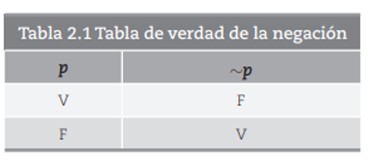
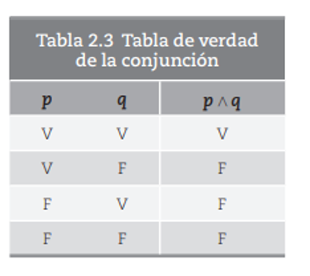
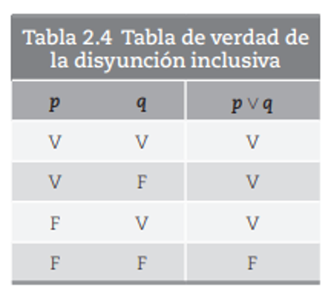
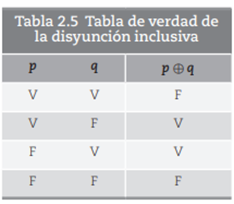
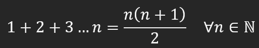
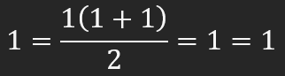
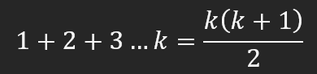
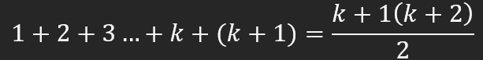
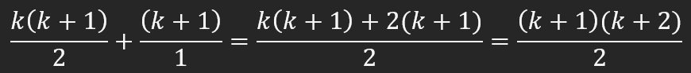

Permiten decidir que valor de verdad tiene una preposición.
Los operadores lógicos se usan para combinar dos valores booleanos y devolver un resultado verdadero, falso o nulo. Los operadores lógicos también se denominan operadores booleanos.
La negación de cualquier proposición p será falsa cuando se niegue una proposición verdadera y será verdadera cuando se niegue una proposición falsa.
Una conjunción es la representación de 2 proposiciones simples que son "p" y "q" su proposición compuesta es p^q y solo será verdadera cuando las 2 proposiciones lo sean Algunas de sus conjunciones son: y, además de, también, así como, pero, e, entre muchas otras Y esta conjunción es conmutativa:P^q=q^p.
"P" y "q" es la representación de 2 proposiciones simples lo que su proposición compuesta vendría siendo pvq y está será falsa cuando estas 2 lo sean Algunas de sus conjunciones son: o, o bien, u, entre otras La disyunción también es conmutativa, es decir: Pvq=qvpeste operador se denomina inclusivo, precisamente por que es verdadero, aun cuando se cumplen las 2 disyuntivas.
Dice que al menos una de las opciones es verdadera, pero sólo una. En este sentido si en “pꚚq”, p es verdadera y q también lo es, la disyunción exclusiva es falsa.
Ahora bien, las proposiciones condicionales son los que indican la condición necesaria para la proposición principal indicando la conectividad de esta entre p y q. incluyendo siempre la palabra “si” antes de la principal llamada antecedente y después del “entonces” como la consecuente.
1) p(x): x es un número entero, y
2) q(x): x es un número racional.
Para empezar, los argumentos se refieren al conjunto de proposiciones las cuales unas son premisas y otras son las conclusiones. Así pues, las premisas son las razones principales siendo el apoyo principal de estas para que pueda coincidir finalmente con la conclusión que se presente. Esta es la que defiende con base a las premisas siempre dependiendo de ellas siendo así todos estos elementos relacionados con las proposiciones que se lleguen a formar en diferentes frases
Como se menciona en el tema, es la reafirmación de los teoremas para asegurar la veracidad de los siguientes argumentos si realmente lo son o no. Ahora bien, inducción matemática es muy parecida al método de demostración la cual esta analiza la proposición dependiendo de la variable. Finalmente, después de haber explicado de manera breve y concisa sobre sus definiciones y algunos puntos importantes de los temas. Los pasos para resolver cualquier ejercicio de inducción matemática son los siguientes:
Ejemplo: Demostrar por inducción matemática que:
Demostrar que se cumple para n = 1
Supngamos es es cierto para n = k
Demostrar que es cierto para: n = k + 1
comprobamos
